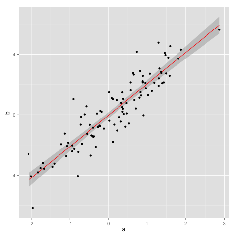

On the management of knowledge
1 Requirements
We will need the followings
- Everyone should be able to publish or edit entries in the wiki. This tasks should not be hindered when one is offline, or when someone else is editing the same entry.
- On the front page, a list of recent major editing will be shown. Details of minor editing will be shown, too, should the user specify.
- Entries might include review and comments of research papers and articles. One should be able to query papers with a relatively cohesive theme.
2 Some Examples
If we don't want to use emacs directly, the following batch execution script could evaluate
the file and export it to HTML.
More information on orgmode HTML export. \(A + B \in R\)
\begin{equation} \begin{split} I(X;Y;Z) &= \mathbb{E}_{X,Y,Z}\left[ \log(\frac{p_M(X,Y,Z)}{p_M(X) p_M(Y) p_M(Z)}) \right] \\ &= H(X) + H(Y) + H(Z) - H(X,Y,Z) \\ &= H(X) + H(Y) - H(X,Y) + H(X,Y) + H(Z) - H(X,Y,Z) \\ &= I(X; Y) + I(X, Y; Z). \end{split} \end{equation}- Theorem
- Let \(G(V,E)\) be Erdos-Reyni, \(|V| = n\).
- Let \(d(n)\) be the average degree of the \(G\).
- If \(d(n) \geq (1+\epsilon)\log(n)\) for some \(\epsilon > 0\) and \(\frac{d(n)}{n} \rightarrow 0\), then with high probability, $$ \frac{AvgDist(n)}{\log_{d(n)}(n)} \rightarrow 1 $$
library(ggplot2) a <- rnorm(100) b <- 2*a + rnorm(100) df <- data.frame(a, b) ## Scatter plot with regression line p <- ggplot(df, aes(x = a, y = b)) p + geom_smooth(method = "lm", se=TRUE, color="red", formula = y ~ x) + geom_point()
